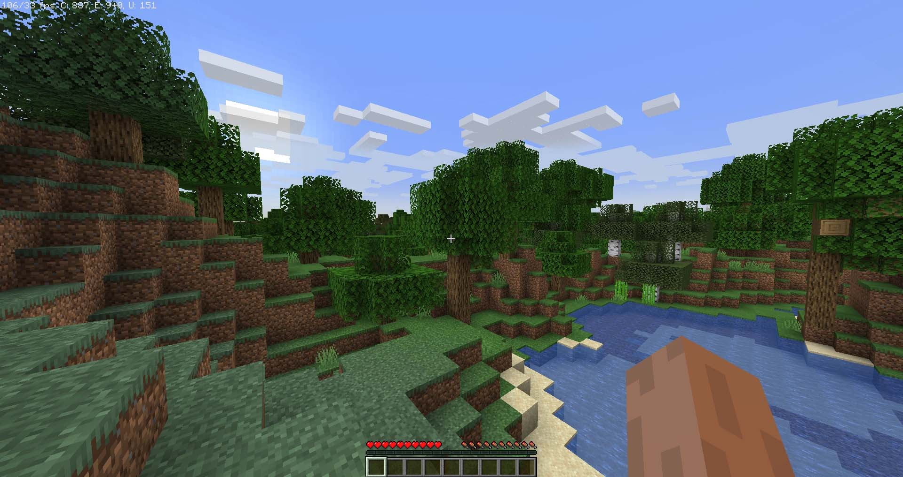
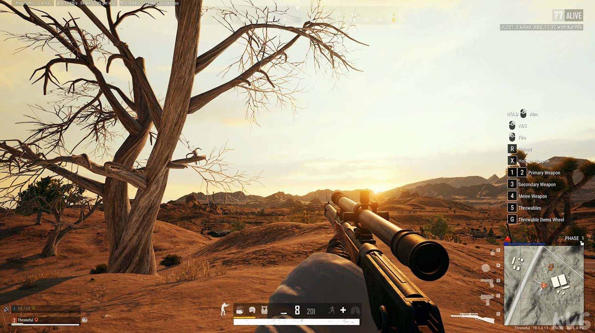
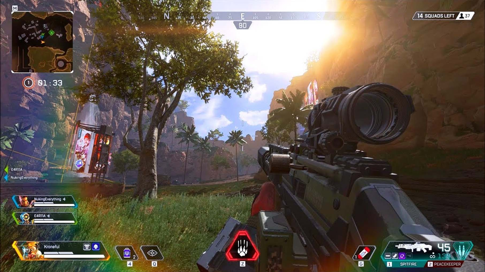
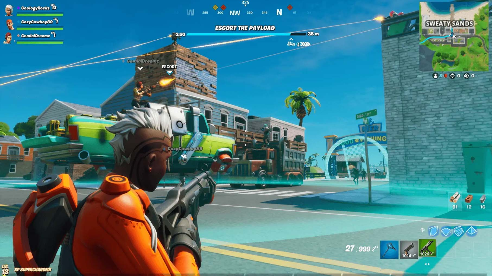
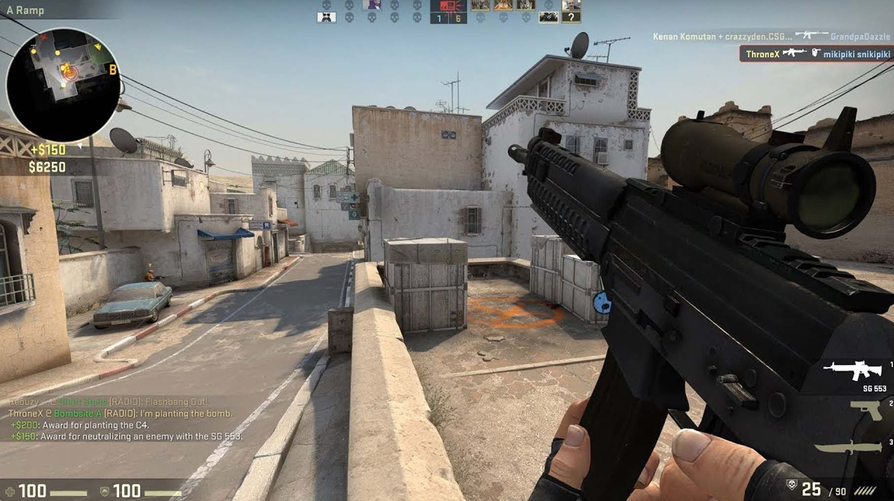
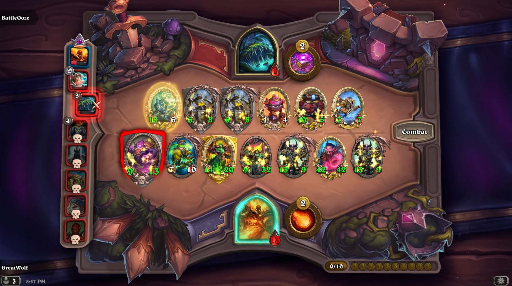
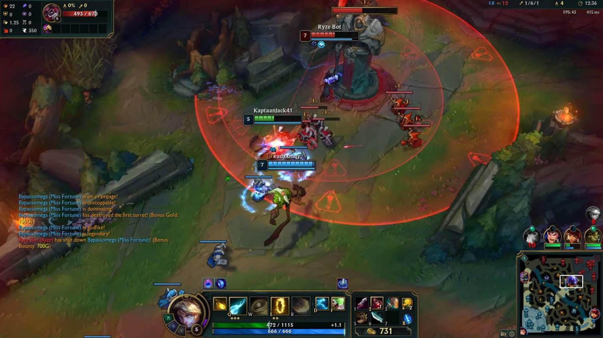
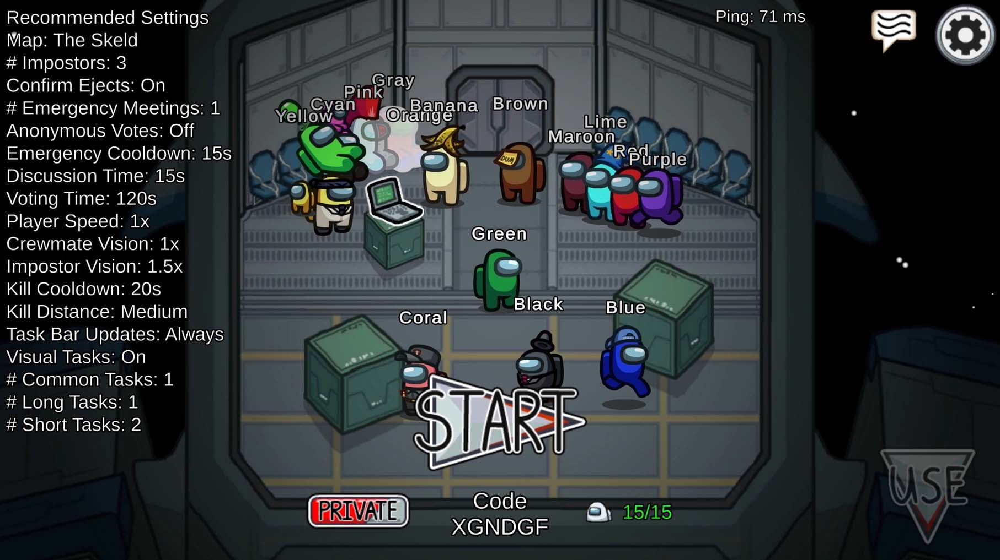
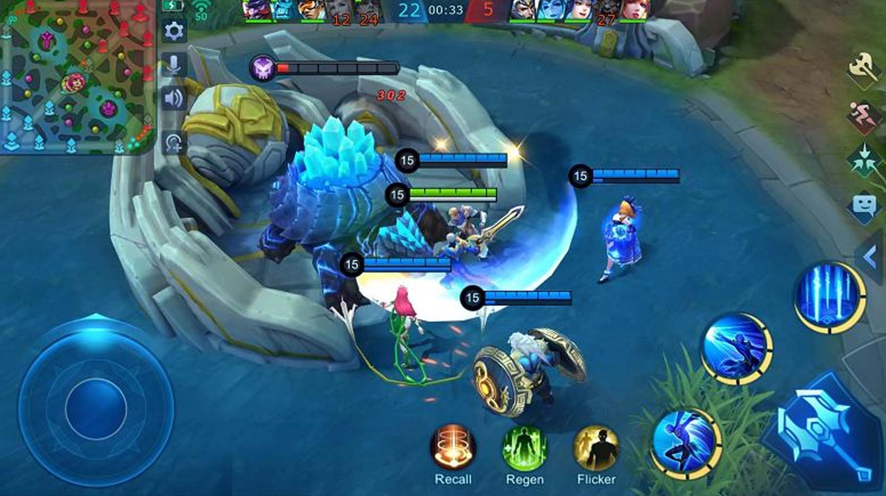
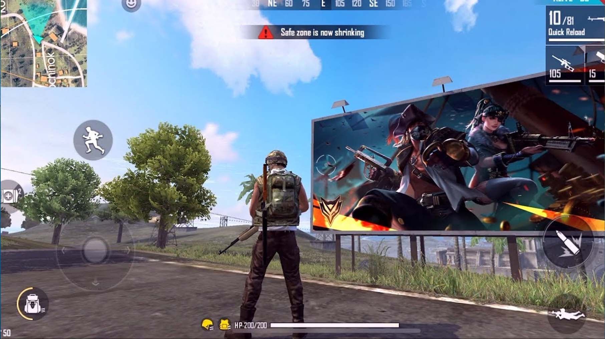

Game Terpopuler
Pontianak, 2 Agustus 2022 - 16.06
oleh Irfanda Anugerah (VANZGADGET.COM)
Bermain gim (game) saat ini bukan lagi menjadi kegiatan yang tidak bermanfaat. Justru sebaliknya, aktivitas ini sangat digemari oleh anak muda. Terutama mereka yang bercita-cita menjadi pemain game atau seorang gamer.
Selain menyenangkan, menjadi seorang gamer bisa mendatangkan pendapatan fantastis jika mampu berprestasi. Apalagi saat ini banyak sekali event perlombaan game terpopuler di dunia yang memasang hadiah unag dengan nominal tinggi.
Berbicara tentang game terpopuler di dunia, beberapa di antaranya sudah menjadi bagian dari cabang olahraga baru yang disebut "esports". Misalnya saja seperti Mobile Legends. Salah satu game terpopuler di dunia yang sangat banyak dimainkan di Indonesia.
Sejumlah tim esports di negara kita, bahkan sudah menjuarai berbagai kejuaraan game tersebut baik di tingkat lokal maupun internasional.
Lantas apa saja jenis game populer di dunia seperti yang paling banyak dimainkan oleh para gamer? Berikut ulasannya.
Game Terpopuler di Dunia
Setiap game dengan berbagai genre mulai dari petualangan, aksi, olahraga, sampai teka-teki memiliki keseruan tersendiri bila dimainkan. Bagi seorang gamer, mereka harus memilih game terbaik untuk dimainkan.
Di era kecanggihan teknologi saat ini, sudah ada lebih dari ratusan judul game terpopuler di dunia yang dirilis untuk semua perangkat. Itu artinya, baik ponsel pintar ataupun komputer dapat memainkan game tersebut.
Dalam artikel ini kami merangkum sejumlah judul game terpopuler di dunia. Sebagai catatan, dalam daftar ini semua jenis game dimasukan. Artinya tidak hanya game Android saja, judul game lawas pun masuk dalam list kali ini.
Dikutip dari Sports Browser dan Gamertweak, berikut daftar game terpopuler di dunia yang wajib dimainkan seorang gamer.
1. Minecraft
Di posisi pertama game terpopuler di dunia adalah Minecraft. Tentunya, judul game ini sudah sangat familiar di kalangan gamer.
Menurut Gamertweak, sejak dirilis kembali pada 18 November 2011, game garapan Mojang Studios ini sudah terjual lebih dari 238 juta kopi game di semua platform.
Minecraft adalah sebuah game yang memberi kebebasan bagi para pemainnya untuk bertahan hidup dan membangun kawasannya sendiri. Pemain juga memiliki otoritas penuh untuk membangun bangunan, berburu hewan, berinteraksi dengan karakter NPC (Non Playable Character) manusia, dan makanan.
Game ini menyediakan beberapa mode. Seperti survival, mode petualangan, mode kreatif, dan mode penonton.
2. PUBG
Membahas daftar game terpopuler di dunia, tentunya kurang lengkap jika tidak memasukan PUBG.
Game bergenre battle royale ini memiliki jumlah player aktif lebih dari 100 juta orang. Judul game yang dikembangkan oleh PUBG Corporation ini, sangat populer karena kualitas grafiknya.
Bahkan untuk versi mobile, game tersebut memiliki sejumlah peta dengan kualitas grafik yang bagus. Selain grafik, pemain juga bisa memilih dan membeli sejumlah item yang diperlukan saat bermain.
3. Apex Legends
Game yang dikembangkan oleh Respawn Entertainment ini, sangat populer di kalangan gamer di dunia. Bahkan, hingga sekarang jumlah pemain aktifnya sekitar 50 juta orang.
Apex Legends adalah sebuah game medan perang yang unik. Game ini memiliki enam tim pemain dengan tiga pemain dalam satu regu. Mereka akan bermain di sebuah pulau dan diharuskan untuk menggunakan sumber daya, serta senjata lain guna melawan regu lain pada saat itu juga.
4. Fortnite
Game terpopuler di dunia berikutnya adalah Fortnite Battle Royale. Sama seperti PUBG, game ini menyuguhkan pertempuran beregu yang seru.
Jumlah pemain aktifnya mencapai lebih dari 40 juta orang. Game tersebut memiliki lebih banyak fitur, peralatan, dan tahapan permainan dengan jumlah player yang jauh lebih banyak ketimbang game sejenisnya.
5. Counter Strike : Global Offensive
Permainan multiplayer ini harus masuk dalam daftar game terpopuler di dunia. Counter Strike adalah game yang mengharuskan pemainnya untuk menyelesaikan misi seperti menyebarkan dan menanam bom, mengamankan lokasi, membunuh teroris, dan menjaga sandera yang ditampilkan di peta.
6. HeartStone
Dikembangkan oleh Blizzard Entertainment sejak tahun 2012, HearthStone adalah game tentang mengumpulkan deck kartu dari rumah yang berbeda dengan kekuatan yang berbeda. Masing-masing kartu tersebut dipakai untuk menurunkan kesehatan dan nyawa lawan agar memenangkan permainan.
7. League Of Legends
Bagi pecinta game, League of Legends adalah game terpopuler di dunia dengan jumlah pemain yang cukup banyak.
Game bergenre Multiplayer Online Battle Arena (MOBA) tersebut, dikembangkan oleh Riot Games dan memiliki player aktif lebih dari 27 orang.
8. Among Us
Game Among Us sempat viral di media sosial beberapa tahun lalu. Penyebabnya tidak lain karena para pemain diharuskan mencari sosok "impostor" dalam permainan. Selain di Android, game dengan tampilan sederhana ini dapat dimainkan di komputer.
9. Mobile Legend
Seperti yang disebutkan sebelumnya, Mobile Legends adalah salah satu judul game terpopuler di dunia yang banyak dimainkan di Indonesia. Konsep game ini yaitu permainan MOBA 5 vs 5. Dimana player harus memilih salah satu hero, lalu bermain di dalam dua tim.
10. Free Fire
Free Fire adalah salah satu game bergenre battle royale yang memiliki ukuran cukup ringan dan ramah bagi ponsel Android. Meski tidak sebagus PUBG dalam segi grafik, game tersebut sangat banyak dimainkan di Indonesia.
Itulah pembahasan tentang daftar game terpopuler di dunia. Sejumlah judul game di atas sangat cocok dimainkan, karena memiliki keunikan dan keseruan tersendiri.

Tentang Penulis
Irfanda Anugerah adalah seorang Mahasiswa semester 4 di salah satu Politeknik Negeri yang ada di kalimantan. Dia sangat menyukai hal berbau Anime dan juga memiliki Sense Design yang lumayan bagus. Berbekal skill Corel Draw & Photoshop yang sangat membantu dia dalam membuat Web ini.
Share our website


Introduction

Vanz Gadget adalah situs web artikel bertema gadget. Dibuat pada tanggal 30 Mei 2022 oleh Irfanda Anugerah..
Artikel Populer


Artikel Lainnya
5 Smartphone dengan Fast Charging Tercepat Saat Ini